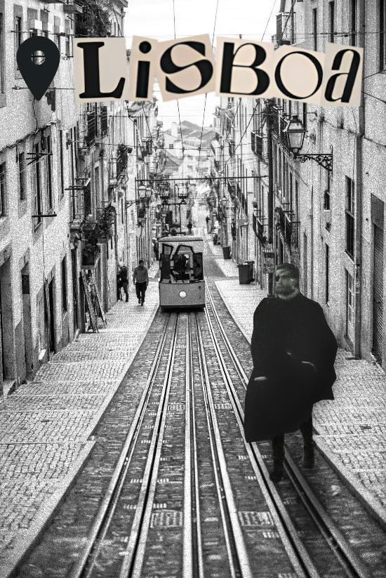
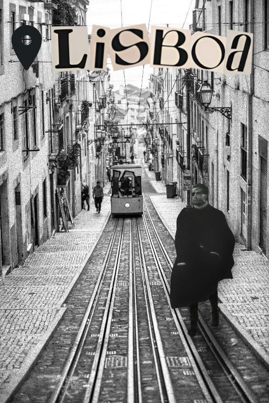

Este projeto consistiu na criação de uma composição visual que articulasse:
- A figura histórica de Camões (retratada de forma artística);
- Elementos que remetem para os feitos gloriosos dos portugueses descritos em Os Lusíadas;
- Um estilo visual moderno e cativante, inspirado nas tendências das redes sociais, especialmente o formato criativo observado em vídeos do TikTok.
Através do GIMP, os alunos aplicaram técnicas de montagem, sobreposição de camadas, recorte de elementos, filtros artísticos e composição cromática, desenvolvendo competências técnicas e estéticas.
üëâ Clique na galeria abaixo para visualizar o trabalho:
 



Trabalhos realizados pelos alunos: Ana Silva, João Mendes, Lara Costa, Bruno Ferreira, Sofia Pires